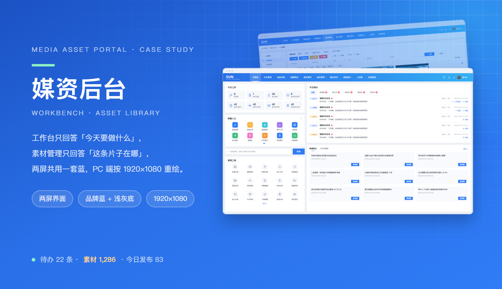

融媒体媒资后台 · 工作台 / 素材管理（PC 端）
后台类界面最容易被做成「功能目录」：十组菜单、二十个入口、三十个按钮平铺在首屏，用户每天要在这堆东西里找同一条路。这次重绘只做一件事——把「我今天该做什么」钉在左上角，其余按「查、做、看」三块分区，两屏共用同一套壳与同一套零件。
主视觉

项目背景
融媒体中心 · 一个人一天要点四十次
这是一套给融媒体中心编辑用的媒资后台。真实的一天是这样的：早上先看今天派到手里的任务，从采集回来的原始素材里挑图挑片、补标题与标签，然后建选题、写稿、送审，等审完再发布，中途还会被 PUSH 稿件与地域热点打断。全流程走完，一个编辑在后台里点击的次数在四十次以上——所以后台的效率不取决于功能多少，而取决于「下一步在哪」这件事有多难找。
旧稿的问题是把所有能力摊平：首屏同时出现十组菜单、八个统计数字、十几个工具入口和四条待办列表，字号与颜色几乎一样重，扫下来找不到落点。重绘先定壳：左侧 200px 固定导航、顶部 64px 顶栏（品牌 + 搜索 + 用户名），内容区严格分区——左上回答「今天要做什么」，中间回答「常用的动作在哪」，右侧回答「外面发生了什么」。素材管理沿用同一个壳，只把内容区换成筛选 + 九宫格。
设计策略
固定壳 · 三块分区 · 一套零件
- 先把壳钉死再谈内容：左侧导航 200px 只放十组一级菜单（工作台 / 任务管理 / 线索采集 / 选题策划 / 素材管理 / 稿件管理 / 融合发布 / 数据统计 / 工具箱 / 系统配置），选中态用一条 3px 白条 + 深一档底色；顶栏 64px 只放品牌、一条搜索框与用户名，其余全塞进二级页。壳不动，用户换页就不用重新找路。
- 今日工作压成两行四列共 8 个指标：建选题 / 被采选题 / 提交稿件 / 被审通过稿件 / 被发布稿件 / 被发布次数 / 被审素材数 / 被审通过素材。数字用 28px 等宽数字、右对齐，标签 12px 一律置灰——八个数字是给自己看的进度条，不是给别人看的荣誉墙。
- 快捷入口做成 10 个等宽瓦片（新建选题 / 审核结果 / 新建稿件 / 素材上传 / 建选题 / 发布稿件 / 选题库 / 宣传提示 / 审核稿件 / 内部稿库），全部动词开头、图标统一 28px 线性、底色 #f6f8fc，hover 才升一档阴影。瓦片比下拉菜单慢一点，但可发现性高得多。
- 常用工具补齐到 15 个（原稿 9 个）：在原有的图像压缩 / 视频剪辑 / 智能封面 / 图片水印 / 图像编辑 / 极速高清 / 音频剪辑 / 视频裁帧 / 语音合成之外，新增视频拼接 / 图片去重 / 文件转码 / 字幕擦除 / 批量打标 / 素材预览，5 列 × 3 行对齐，最后一行末尾保留「更多 »」。新加的六个都是编辑每天真正会用的碎活，避免为了省钱跳去外部软件再传回来。
- 今日待办用五个状态 tab 收口：全部 / 待领取 / 执行中 / 审核中 / 待发布 / 评估中。每一行标题固定两行高、发起人与时间压在副行，动作按钮跟着状态变——待领取给「上传素材 · 送审」，执行中给「查看 · 领取」，审核中只给「审核」。同一行模板跑五种状态，比五套列表好维护。
- 地域热点与 PUSH 稿件合成右侧一列：标题一行、时间精确到分（2024/01/02 12:32:12）、右侧一颗「建选题」小按钮，标题与按钮之间留 16px 呼吸。编辑扫的是标题，手上的动作只有一个——把它变成选题。
- 素材管理把筛选拆成两段：左侧六组导航（原始素材库 / 个人素材 / 热点线索 / 内部线索 / 我的采集需求 / 需求评估 / 采集评估 / 采集数据分析 / 采集策略），内容区顶部五组条件（全部分类 · 审核状态 · 编目状态 · 码率 · 时长）+ 一行类型胶囊（全部 / 视频 / 图片 / 音频 / 文档 / 其他 / 聚合包）。筛选永远在卡片上方一行，不弹抽屉。
- 素材卡统一 4:3 缩略图 + 三枚标签（图片 / 人物 / 影视 / 环境）+ 来源与上传人、时间四行元信息，鼠标移入才露出复制 / 移动 / 下载 / 分享链接四个动作。默认不给按钮，是为了让九宫格里的画面先被看见——素材管理的核心是挑图，不是点按钮。
工作台
左上回答今天 · 中间回答常用 · 右侧回答外面

素材管理
筛选常驻 · 九宫格 · 移入才给动作

视觉语言
品牌蓝主色 · 浅灰底 · 琥珀提醒 · 告警红
整套后台只有一个强调色：品牌蓝 #2f7cf6（按钮、选中态、进度条、链接），深一档的 #2a70e8 只用在按钮按下与侧栏选中，浅一档的天蓝 #35b2f4 只出现在图表与图标点缀里——同一个蓝的三个明度，比三个不同的颜色更像一套系统。页面底 #eff2f7、卡片纯白、分隔线 #edf0f5 三档灰把内容切成卡片与背景两层，卡片阴影只有一层 0 2px 8px rgba(31,35,41,.04)，不叠加。琥珀 #f5a623 只表示「待你处理」：待办未读数、待发布稿件的角标；告警红 #f5535a 只表示「出问题了」：审核驳回、素材失效。文字 #1f2329 主色、#6b7688 副文、#aab3c0 说明三档，标签统一 12px；所有数字用等宽字形（$ / 42 / 2024/01/02 12:32:12 都能对齐）。形状上按钮 6px 圆角、卡片 10px、瓦片 8px、胶囊 999px，全站没有一处在用不同的圆角逻辑。
遇到的问题与解决
4 个「后台」带来的取舍
问题八个指标、十个快捷入口、十五个工具全塞进首屏，滚一屏看到的字重都差不多，眼睛找不到第一个落点。
解决先用字号分出三层：指标数字 28px、区块标题 15px、瓦片与工具名 13px；再用底色分出两块：指标条与待办列表落在白卡上，快捷入口与工具落在浅灰底上，右侧热点列自成一列不参与横向栅格。扫视顺序被固定成「数字 → 瓦片 → 工具 → 右侧」，用户第二次进来就不用再学一遍。
问题待办与热点 tab 上的未读数用绝对定位压在右上角，数字一到两位数就顶到相邻 tab 的文字上，五个 tab 全被撑歪。
解决把角标从绝对定位改成行内静态元素：tab 内部用 flex 排「文字 + 胶囊角标」，角标 padding 0 6px、高度 18px，跟着文字一起排版；数字变长时只有这一格变宽，其余 tab 均匀分配剩余空间。整排 tab 的基线从此不再随未读数跳动。
问题素材卡默认不显示动作按钮（四个按钮压在缩略图上会盖住画面），但触屏与键盘用户就永远拿不到复制 / 下载。
解决保留 hover 显形作为主路径，同时补两条等价入口：卡片本身可聚焦，键盘 Tab 到卡片时四个动作以同样的浮层出现；卡片右键菜单里放同一组动作。默认仍然不占位——画面优先这件事不能让位给按钮。
问题常用工具从 9 个扩到 15 个，5 列布局下最后一行只剩 4 个格子加一个「更多」，右下角空一块，看着像没加载完。
解决按 15 = 5 × 3 排满，把「更多 »」从格子里挪到区块标题右侧，与「常用工具」同一行右对齐。区块内部从此只有一种格子，补到第 16 个工具时只需新增一行，不会破坏对齐。
从设计到交付
3 步 · 先定壳，再定量，最后定态
-
1 · 结构 · 先把壳与分区钉死
不画任何一张卡片，先在 1920 × 1080 的画布上切三块：左导航 200px、顶栏 64px、内容区剩下全部。再把内容区分成「左上今日工作 / 中间快捷入口 + 常用工具 / 右下今日待办 + 右侧热点」四格，量好 24px 的模块间距与 20px 的内边距。壳定了，后面两个屏都只是往里填不同的内容。
-
2 · 制作 · 两屏共用一套零件
先做零件再做页面：导航项、指标卡、瓦片、工具格、状态 tab、待办行、热点行、筛选组、类型胶囊、素材卡、分页，十一个零件覆盖工作台与素材管理两屏。工作台按最长的标题排（“大熊猫、金丝猴双宝文化艺术展”亮相国家动物博物馆），素材管理按最满的一行排（九张卡 + 五组筛选），极端情况先过一遍，常态就不会溢出。
-
3 · 交付 · 标注与走查
交付两屏设计稿（1920）+ 十一个零件 + 色彩与字号表；与开发逐项走查数字的等宽对齐（八个指标、时间戳 2024/01/02 12:32:12）、五个待办状态的按钮映射、素材卡在 1440 与 1920 两档下的列数（4 列 / 5 列）、hover 浮层在小屏上是否压住相邻卡片。
交付内容
这次做了什么